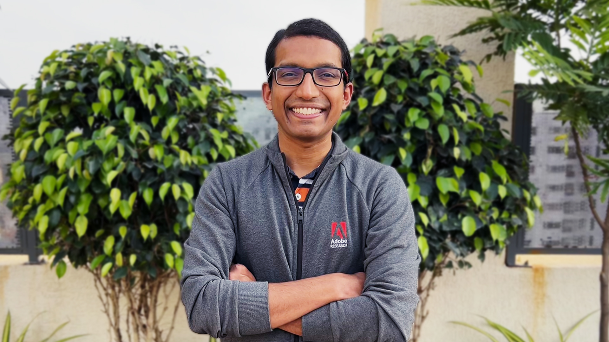
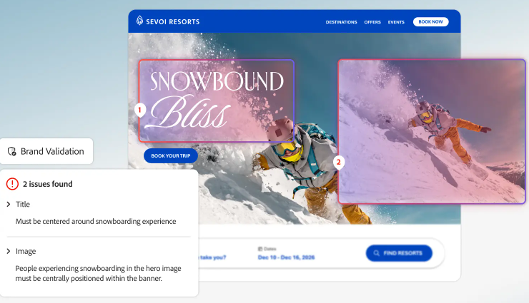
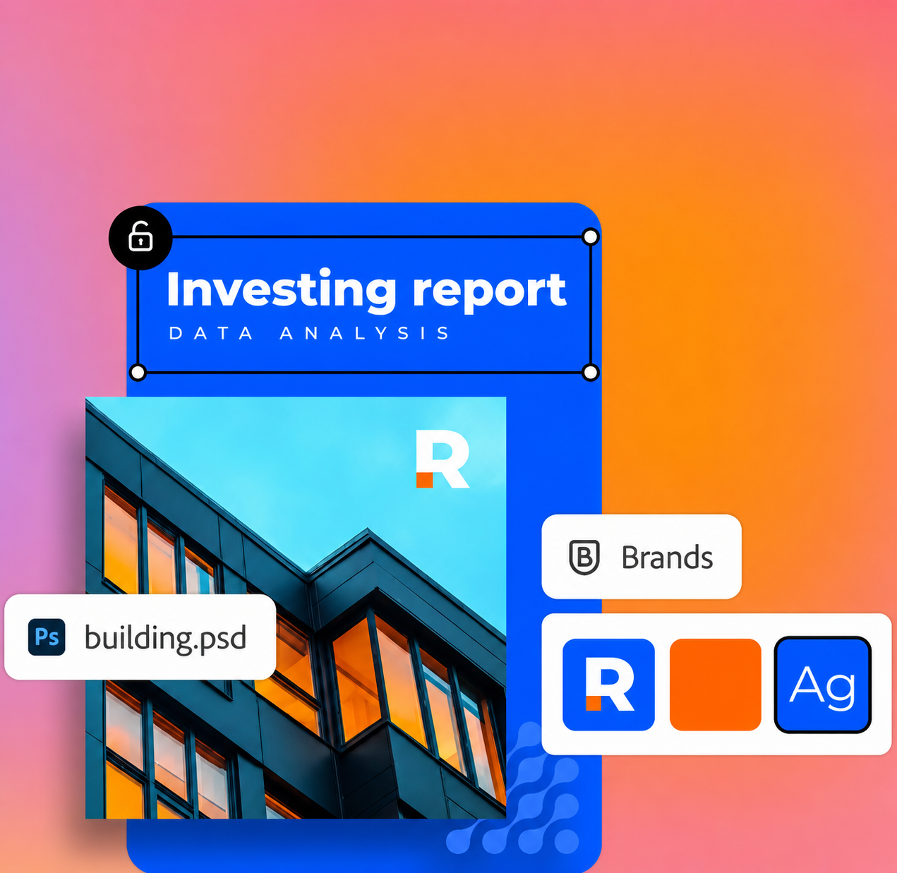
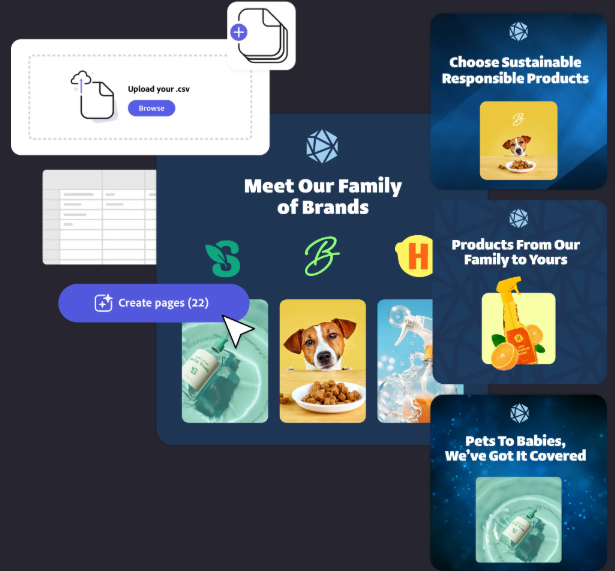
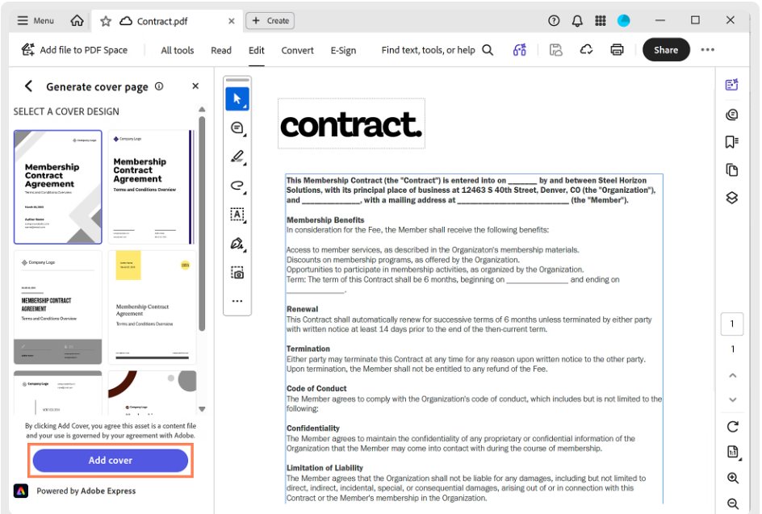
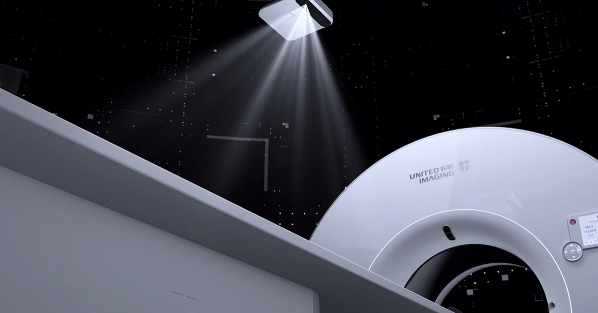
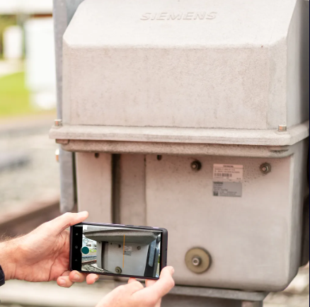
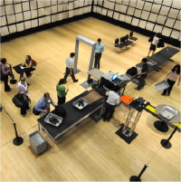

I develop new computer vision and machine learning ideas and turn them into real-world AI products.
I'm Senior Research Scientist and Manager at Adobe Research India where I work on computer vision and related problems. I've previously worked at Siemens Research in Princeton, NJ and United Imaging Intelligence in Boston, MA. I've shipped AI features across diverse areas such as Enterprise AI, Healthcare, Industrial Automation, and Public Safety. I regularly publish in leading computer vision and machine learning venues and earned my PhD at RPI where my adviser was Prof. Rich Radke.

Brand-aware AI for agentic marketing. Scales consistent brand expression across content workflows.

Automatically converts existing brand assets into reusable brand systems for content creation.

Applies brand colors automatically while preserving graphic structure and visual identity.

Automatically design a cover page that matches your document’s brand colors.

Automatic Patient Positioning. Real-time, contactless scanning. Deployed in hundreds of hospitals worldwide.

AI-powered visual identification of industrial spare parts. Streamlines maintenance and service workflows.

Computer vision research developed into a real-time multi-camera system deployed for evaluation with the TSA.
Recent academic service focused on the Computer Vision and Indian research community.